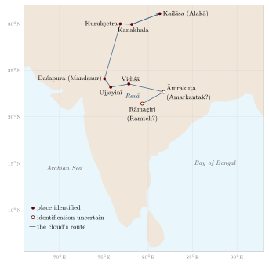

Chapter 10: Mountains: Himālaya, Vindhya and the Ghats¶
asty uttarasyāṃ diśi devatātmā himālayo nāma nagādhirājaḥ
pūrvāparau toyanidhī vigāhya sthitaḥ pṛthivyā iva mānadaṇḍaḥ
“In the north there is a king of mountains named Himālaya, whose soul is divine; plunging into the eastern and western oceans, he stands like a measuring-rod of the earth.”
— Kālidāsa, Kumārasambhava 1.1
The opening of Kālidāsa’s Kumārasambhava, probably of the fourth or fifth century CE (the poem itself is discussed in Volume 8, Kāvya Kalpalatā), is a geographer’s image as much as a poet’s. The range is laid across the north like a surveyor’s rod (mānadaṇḍa), long enough to touch the eastern and the western sea, and it is at the same time a being with a divine soul. Extent and sanctity together run through Indian thinking about mountains. The Himālaya bounds the subcontinent to the north, shapes the monsoon, feeds the great rivers, and is the home of gods. The Vindhya divides north from south. The Western Ghats separate the Deccan from the western coast and catch the monsoon rains. Many individual peaks are sacred. And the people who live in the mountains hold a practical knowledge of them that the texts of the plains rarely record.
10.1 The Himālaya in Texts and Tradition¶
The Himālaya (“abode of snow”) or Himavat (“snowy”) stretches some 2,400 km from the Indus gorge in the west to the Brahmaputra in the east, in several parallel ranges rising from the foothills to the high peaks. In the Purāṇic cosmography it is the range that separates Bhāratavarṣa from Kimpuruṣavarṣa (Chapter 2); in the epics it is the region of sages’ hermitages, of the sources of the Gaṅgā, and of the journey towards heaven. In the Mahābhārata’s Mahāprasthānikaparvan the Pāṇḍavas, at the end of their lives, walk north into the mountains, falling one by one until only Yudhiṣṭhira remains. In the Kiṣkindhākāṇḍa of the Rāmāyaṇa, Sugrīva’s instructions to the search party sent north describe the Himālaya, Kailāsa and the land of the Uttarakurus beyond, in a mixture of real and mythical geography.
The texts also show practical familiarity with the mountains’ resources. The deodar cedar (devadāru, “tree of the gods”) and the birch, whose bark (bhūrja) was a common writing material in Kashmir and the north-west, appear frequently; musk, medicinal plants, yak-tail fans and gold were among the products brought down from the hills, and are listed among the tribute brought to Yudhiṣṭhira in the Sabhāparvan.
10.1.1 Sacred Places of the Himālaya¶
The upper valleys of the Gaṅgā in Garhwal contain some of the most important Hindu pilgrimage places: the sources of the Yamunā and Bhāgīrathī at Yamunotrī and Gaṅgotrī, the Śiva shrine of Kedārnāth and the Viṣṇu shrine of Badrīnāth (Chapter 4). Further west lie the cave of Amarnāth in Kashmir, with its ice liṅga, and the shrine of Vaiṣṇo Devī in the Trikuta hills; further east, Buddhist monasteries and sacred lakes in Sikkim, Bhutan and Arunachal Pradesh. Kailāsa and Mānasarovar lie beyond the main range in Tibet.
Kedārnāth (Table 4.1) is snowbound for half the year. In June 2013 heavy rain and the breaching of a glacial lake above the shrine caused a flood that killed several thousand pilgrims and residents in the Kedārnāth valley and across Uttarakhand; the exact number is not known. The temple survived, but the disaster drew attention to the risks of unregulated building and mass pilgrimage in fragile mountain valleys.
10.1.2 Hidden Lands and Pilgrimage Guides of the Buddhist Himālaya¶
In the Buddhist Himālaya, sacred geography took distinctive forms. Tibetan pilgrimage guides (gnas yig) describe the sacred sites of a mountain, lake or valley, the deities that dwell there and the merits of visiting them. A tradition associated with Padmasambhava speaks of “hidden lands” (sbas yul), valleys concealed by the master for refuge in times of trouble and revealed later by visionary lamas; Sikkim, called in Tibetan the hidden land of Demojong, and valleys in Nepal and Arunachal Pradesh were identified as such and settled by migrants who believed they were entering a sacred refuge. Monasteries and pilgrimage routes in Ladakh, Spiti, Sikkim and Arunachal Pradesh thus form part of a Himalayan sacred geography that links India with Tibet, Bhutan and Nepal.
10.1.3 The Goddess of the Mountains: Nandā Devī¶
In Garhwal and Kumaon the goddess Nandā is identified with the mountain Nandā Devī (7,816 m), the highest peak wholly within India. About once every twelve years a great procession, the Nandā Devī Rāj Jāt, escorts the goddess from the village of Nauti near Karnaprayag towards the high mountains, a journey of some three weeks on foot through villages, forests and high pastures to the lake of Rūpkuṇḍ and beyond, led by a four-horned ram that is released at the end of the journey. The procession, organised by local royal and priestly families, unites the villages of the region in a ritual of the mountain goddess’s return to her husband’s home on Kailāsa. It is a striking example of a regional sacred geography centred on mountains rather than on rivers or temples.
10.2 Passes and Routes¶
The passes of the north-west and the Himālaya, and the trade that crossed them, are described in Chapter 8. Here it is enough to note that most Himalayan passes are open only from about June to October, that they were crossed by traders and pilgrims on foot with yaks, sheep, goats and ponies as pack animals, and that their names often record their dangers: Rohtang, between Kullu and Lahaul, is popularly explained as Tibetan for “plain of corpses”. Until roads were built in the twentieth century, the passes were the domain of the specialised trading communities of the high valleys, such as the Bhotiyas of Kumaon and Garhwal, and of the guides who knew them.
The Arthaśāstra discusses forts in mountains (pārvata durga) among its types of fortification, and its book on war discusses fighting in different kinds of terrain (Olivelle 2013). Control of passes and frontier forts was a recurring concern of states from the Mauryas to the Mughals, whose campaigns in the north-west depended on the Khyber and the routes through Kabul and Kandahar.
10.3 Ladakh and the Trans-Himalayan Trade¶
Ladakh, in the upper Indus valley, was for centuries a crossroads of trans-Himalayan trade. Leh, its capital, was a meeting place for caravans from Kashmir and the Punjab, from Yarkand and Kashgar over the Karakoram, and from western Tibet. The fine goat wool (pashm) of the high Changthang plateau was brought through Ladakh to Kashmir, where it was woven into the famous shawls; salt, borax and brick tea came from Tibet; textiles, spices, sugar and metal goods went north. After a war between Ladakh and Tibet in the 1680s, a treaty regulated this trade and established periodic missions between Leh and Lhasa, which continued, with interruptions, until the mid-twentieth century.
The traders who conducted this commerce—Ladakhi, Kashmiri, Tibetan, Central Asian and Punjabi—knew the seasons of the passes, the pastures and halting places of the high plateaus and the politics of the regions they crossed. Their routes were among those later traced by the pundit explorers of the Survey of India (Chapter 14), and the closing of the Tibetan and Chinese borders after 1950 ended a trade that had lasted for many centuries.
10.4 Kashmir: A Valley and Its Chroniclers¶
The valley of Kashmir, enclosed by the Pir Panjal and the Great Himalaya and drained by the Vitastā (Jhelum), has an unusually rich literature about its own geography. The Nīlamata Purāṇa, a local Purāṇa, describes the origin of the valley from a lake drained by the gods and lists its sacred springs, rivers and festivals. Kalhaṇa’s Rājataraṅgiṇī (“River of Kings”, 1148–49), a verse chronicle of the kings of Kashmir, is full of precise topographical information: towns, temples, streams, passes and the courses of rivers (Stein 1900).
Kalhaṇa records one of the best-known water-management projects of early medieval India. Under King Avantivarman (r. 855–883), an engineer named Suyya is said to have cleared the bed of the Vitastā of the rocks that had blocked it below the Wular lake, regulated the course of the river and its confluence with the Sindh, built embankments, and reclaimed marshy land for cultivation, so that the price of rice fell sharply. Whatever exaggeration the account may contain, it shows a ruler and his expert reshaping the hydrology of an entire valley. Around 1900 Aurel Stein used Kalhaṇa’s chronicle, together with his own surveys, to reconstruct the ancient geography of Kashmir in one of the classic studies of Indian historical geography.
10.5 The Vindhya: A Cultural Boundary¶
The Vindhya hills run east–west across central India, north of the Narmadā. They are not high—most of the range is below 700 m, and the higher Satpura hills to the south of the Narmadā reach about 1,350 m at Dhupgarh near Pachmarhi—but they were long regarded as the boundary between north and south. The Manusmṛti defines the Middle Country and Āryāvarta as lying between the Himālaya and the Vindhya (Chapter 1), and Dakṣiṇāpatha began beyond them.
A well-known story, told in the Mahābhārata (Book 3) and the Purāṇas, explains why the Vindhya is low. Jealous of Meru, around which the sun circles, the Vindhya began to grow until it blocked the sun’s path. The sage Agastya, the Vindhya’s teacher, asked the mountain to bow down to let him pass southward and to stay low until he returned; Agastya never returned, and the Vindhya remains bowed. In Tamil tradition Agastya (Akattiyar) is the sage who brought learning to the south and is credited with the first Tamil grammar. The story expresses, in mythical form, the idea of the Vindhya as a barrier between two cultural worlds, and of northern Brahmanical culture moving south. Tamil literature, it should be remembered, had its own long and independent history, and the southward movement of Sanskrit culture was an exchange rather than a one-way transmission.
10.6 The Western Ghats¶
The Western Ghats, or Sahyādri, run some 1,600 km parallel to the western coast from near the Tāpī river to the southern tip of the peninsula. Their steep western scarp faces the Arabian Sea; to the east they slope gently into the Deccan, so that most of the peninsula’s great rivers rise within a few dozen kilometres of the western sea and flow east to the Bay of Bengal. The range catches the full force of the south-west monsoon, and parts of it receive several metres of rain a year. Together with Sri Lanka it forms one of the world’s recognised biodiversity hotspots, and parts of the range were inscribed as a UNESCO World Heritage Site in 2012.
Movement across the Ghats was concentrated at a few passes (ghāṭ) and gaps: the Thal Ghāṭ and Bhor Ghāṭ behind Mumbai, used by the first railways into the Deccan in the 1860s; the Nāṇeghāṭ and other passes of the Sātavāhana period (Chapter 8); and in the south the Palakkad (Palghat) Gap, a broad, low break in the range between the Nilgiri and Anaimalai hills, which carried trade between the Kerala coast and the Kāverī plains and still carries the main road and railway between Kerala and Tamil Nadu.
The southern Western Ghats are the Malaya mountains of Sanskrit literature, famous for sandalwood and pepper, and the scene of many poetic conventions: the Malaya breeze, cooled by the sandal forests, is the wind of spring in classical poetry.
10.6.1 The Hill Forts of the Sahyādri¶
The steep, flat-topped hills of the northern Western Ghats made natural fortresses, and from the medieval period onward they were crowned with forts. In the seventeenth century Śivājī (1630–1680) built his power on control of these hill forts—Torna, Rajgad, Raigad, Pratapgad, Sinhagad and many others—and of the passes between the Deccan and the Konkan, together with sea forts on the coast such as Sindhudurg. Maratha military strategy depended on intimate knowledge of this terrain: of paths, water sources, monsoon conditions and the movement of armies through narrow valleys. The forts, with their rock-cut cisterns and walls following the edges of the cliffs, remain a striking example of the use of mountain geography for defence, and in 2025 a group of them was inscribed as a UNESCO World Heritage Site, the “Maratha Military Landscapes of India”.
10.6.2 Śabarimala¶
The shrine of Ayyappan at Śabarimala, in the forests of the Western Ghats in Kerala, draws very large numbers of male pilgrims each winter, who observe a period of vows and walk the last stretch through the forest. The temple’s custom of excluding women of menstruating age led to a Supreme Court judgment in 2018 declaring the exclusion unconstitutional, protests in Kerala, and, in 2019, a reference of the wider questions of religious practice and equality to a larger bench of the Court.
10.7 The Forests and Hills of Central India¶
Between the Gangetic plain and the Deccan lies a broad belt of hills, plateaus and forests: the Vindhya and Satpura ranges, the Chhotanagpur plateau, the hills of Bastar and the Eastern Ghats. In Sanskrit literature this was the great forest of the south, the Daṇḍakāraṇya through which Rāma travels in the Rāmāyaṇa, and the home of peoples described from outside as “forest dwellers” (āṭavika) or by tribal names such as Śabara and Pulinda. Aśoka’s edicts warn the forest peoples of his power; Samudragupta’s Allahabad inscription claims to have made the kings of the forest tracts his servants.
The forest belt was not empty or unknown. It was home to many communities—Gonds, Bhils, Baigas, Santals, Mundas, Oraons, Khonds and others—with their own knowledge of its plants, animals, water and seasons, and their own sacred places, often hills, groves and springs. It was crossed by routes that linked north and south and by networks of exchange in forest products such as lac, honey, resins, hides and timber, on which the economies of the plains depended, and from the medieval period it had kingdoms of its own, such as those of the Gonds (Section 12.9).
Colonial forest policy from the 1860s reserved large areas of these forests for the state, restricting the rights of their inhabitants to cultivate, graze and gather, and provoking repeated resistance. Since independence, mining, dams and industry have brought further displacement. The geography of the central Indian forests is therefore also a history of contested rights, and its knowledge-holders are the Adivasi communities themselves, whose traditions are discussed in Volume 23 of this series, Jana–Jāti: Tribal and Folk Knowledge.
10.8 Sacred Hills of the South and Beyond¶
10.8.1 Aruṇācala¶
The hill of Aruṇācala at Tiruvannamalai in Tamil Nadu is worshipped as a form of Śiva himself, the column of fire in which he appeared to Brahmā and Viṣṇu. Pilgrims walk round it (giripradakṣiṇa, about 14 km), above all at the festival of Kārttikai Dīpam, when a great fire is lit on the summit. The twentieth-century sage Ramaṇa Maharṣi (1879–1950) lived on and below the hill for more than fifty years and composed hymns to it, which made Aruṇācala widely known outside India.
10.8.2 Tirumala and Other Hills¶
The temple of Veṅkaṭeśvara on the Tirumala hills in the Eastern Ghats of Andhra Pradesh is among the most visited pilgrimage places in the world. In Sri Lanka, Adam’s Peak (Śrī Pāda) bears a footprint venerated by Buddhists as the Buddha’s, by Hindus as Śiva’s and by Muslims and Christians as Adam’s; Ibn Baṭṭūṭa climbed it in 1344. Jain sacred hills—Śatruñjaya, Girnār, Sammeta Śikhara and Śravaṇabeḷagoḷa—are described in Chapter 4.
10.9 A Poet’s Itinerary: The Meghadūta¶
Kālidāsa’s Meghadūta (“The Cloud Messenger”) is a love poem, but its first half is also one of the most famous pieces of geographical writing in Sanskrit. A yakṣa, exiled for a year to the hill of Rāmagiri in central India, asks a monsoon cloud to carry a message to his wife in the city of Alakā, on the slopes of Kailāsa. He then describes the route the cloud should take northward: over the mountain Āmrakūṭa; past the Revā (Narmadā) spreading among the rocks at the foot of the Vindhya; through the country of the Daśārṇas to Vidiśā on the Vetravatī (Betwa); with a detour west to Ujjayinī, the city of Mahākāla; over the Gambhīrā and Carmaṇvatī (Chambal) rivers; past Daśapura (Mandsaur), Brahmāvarta and the battlefield of Kurukṣetra; to Kanakhala where the Gaṅgā leaves the mountains; and up into the Himālaya, through the Krauñca pass, to Kailāsa and Alakā.

The route (Figure 10.1) follows the path of the monsoon clouds as they move north-west across central India in the rainy season, and it names real rivers, towns and shrines in a plausible order. The poem shows how geographical knowledge was woven into literature: an educated audience was expected to know these places and to enjoy the poet’s evocation of each. Later poets imitated the form in many “messenger poems” (sandeśakāvya), which send a cloud, a goose or a cuckoo along routes through their own regions and so preserve something of the regional geography of their time.
10.10 Hill Stations¶
The British created a new kind of mountain place: the hill station. From the 1820s, officials and their families began to spend the hot season in the hills, and towns grew up at Shimla, Mussoorie, Nainital and Darjeeling in the Himālaya, at Ootacamund (Udhagamandalam) in the Nilgiris, and at Mahabaleshwar and Matheran in the Western Ghats. From 1864 Shimla became the summer capital of the Government of India, so that for half of every year the empire was governed from a Himalayan ridge. Hill stations were built on land often taken from local communities such as the Todas of the Nilgiris, and they depended on the labour of porters and servants from the hills and the plains. Tea and coffee plantations in Darjeeling, Assam and the Nilgiris transformed the hill landscapes and their economies, and brought migrant labourers from central India and Nepal. The hill stations are a reminder that the colonial period produced its own geography of the mountains, quite different from the sacred geography of the pilgrim or the working geography of the herder.
10.11 Mountain Peoples and Mountain Knowledge¶
The most detailed knowledge of the mountains has always belonged to the people who live in them, and very little of it was recorded in classical texts. Some examples:
-
Transhumant herders, such as the Gaddis of Himachal Pradesh, the Bakarwals and Van Gujjars, and the Bhotiyas of Kumaon and Garhwal, move their flocks and households between winter grazing in the foothills and summer pastures (bugyāl in Garhwal) in the high mountains, following routes and rights that have been negotiated over generations.
-
Traders of the high valleys conducted the trans-Himalayan trade, timing their journeys to the opening and closing of passes and the fairs of Tibetan market towns.
-
Farmers of the north-east, such as the Apatani of Arunachal Pradesh, developed intensive wet-rice systems in mountain valleys, while many communities practised shifting cultivation (jhūm) on hill slopes; Khasi and Jaintia villages in Meghalaya trained the roots of rubber fig trees into living bridges across streams.
-
Hill communities in the peninsula, such as the Todas of the Nilgiris, the Soligas of the Biligiri Rangan hills and many others, have their own knowledge of forest, pasture and water.
This knowledge was not static or always benign, and it was reshaped by colonial forest laws, which restricted access to forests in the name of conservation and revenue. Resistance to those restrictions runs through the modern history of the Himālaya. The Chipko movement of the 1970s in Garhwal, in which villagers, many of them women, embraced trees to prevent commercial felling, drew on older traditions of peasant protest and became a symbol of environmental movements in India (Guha 1989).
Modern Relevance: Mountains and Change
The Himalayan glaciers are retreating, and changes in snowfall and monsoon rainfall affect the rivers of the plains. Road building, dams and mass tourism and pilgrimage have increased landslide and flood risks, as the Kedārnāth disaster of 2013 showed. The local knowledge of mountain communities—of snow, slopes, streams and seasons—can contribute to understanding and coping with these changes, alongside scientific monitoring, provided that it is recorded carefully and its holders have a voice in decisions.
Further Reading¶
On sacred mountains and pilgrimage see Eck (2012) and McKay (2015); on Himalayan history and environment, Guha (1989).